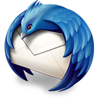
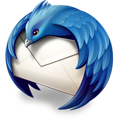
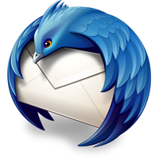

Pablo Cuadrado / Julia Capoduro - MozCafé #1 - Rosario, Argentina - 6/12/2012
Oh hey, these are some notes. They'll be hidden in your presentation, but you can see them if you open the speaker notes window (hit 's' on your keyboard).
Qué es Mozilla
Mozilla hoy
Acceso al conocimiento
Un nuevo desafío
Firefox OS
Es una organización sin fines de lucro .comunidad global dedicada a promover la web abierta,
y construir productos y tecnologías de software libre .Firefox
y del cliente de correo Thunderbird .

El mercado de navegadores estaba
dominado por uno que no respetaba
los estándares web .
Explain that without Mozilla, Internet Explorer would be the dominant browser,
that we are a not-for-profit organisation to keep the web open and that without
us the web would be a corporate-only environment.
No existía un navegador gratuito disponible para
Windows, Mac y Linux que ofreciera soporte y respetara
los estándares web.No había plugins, addons, extensiones, no podías personalizar tu browser.
El proyecto Mozilla nació en el año
1998, fruto de la liberación del código
fuente de Netscape Navigator.
Firefox (y Opera) allanaron el camino para que otros browsers se liberen como
open source y soporten estándares web. Incluso Explorer hoy en día hace mucho
para soportar y promover los estándares web.
¿Qué es la web abierta?
Transparente
Participativa
Descentralizada
Modificable
Accesible
Estándares
Todas las páginas web con un mismo lenguaje.
Quienes producen contenidos en Internet no deben
preocuparse por el navegador que utilizan los usuarios.
Respetar la libertad de los usuarios de usar el
navegador que mejor se adapte a nuestras necesidades
Es un esfuerzo global para promocionar la
elección e innovación en Internet y una gran
oportunidad para hacer mejor la web.
Mozilla is much more than Firefox though. We are a not-for-profit organisation to
promote the open web. This means we educate people on how to publish content and
we protect people's privacy and identity and choice on the web.
https://webmaker.org
Mozilla Webmaker is an ongoing project to turn pure consumers of the web
into makers. We teach basic web editing skills, how to publish and mix
video with online content and basic ways to keep safe and have a good
time on the web.
Crear
Modificar
Reciclar
Reinterpretar
Transformar
Mozilla Webmaker is an ongoing project to turn pure consumers of the web
into makers. We teach basic web editing skills, how to publish and mix
video with online content and basic ways to keep safe and have a good
time on the web.
Una generación de webmakers
https://webmaker.org
Mozilla Webmaker is an ongoing project to turn pure consumers of the web
into makers. We teach basic web editing skills, how to publish and mix
video with online content and basic ways to keep safe and have a good
time on the web.
https://thimble.webmaker.org/en-US/projects/map/edit
Mozilla Thimble is a very simple and interactive way to learn basic HTML. An editor on the
right hand side of the screen lets you write things and the results are shown immediately on
the left. You can also choose from already existing projects and write in them. The editor
shows you when you make an error and links it to the documentation on the developer network.
You can choose from various challenges to become better and better in editing HTML.
Luz, cámara, interacción!
http://mozillapopcorn.org
Mozilla Popcorn is a simple way to create interactive web experiences from video and
audio materials. You have an editor to overlay web content over videos and interact
with parts of the page.
Persona - protegé tu identidad!
http://www.mozilla.org/en-US/persona/
Mozilla Persona te permite loguearte en aplicaciones y sitios web.
En lugar de tener que crear un usuario y un password para cada sitio al que
te logueás, podés loguearte simplemente con un e-mail autorizado en tu navegador.
Photo by Jason Weaver
One very obvious change in the last years was that the web became much more mobile.
Instead of desktop machines we use laptops, smart phones and tablets and all of
these devices get more powerful by the month. They all come with different resolutions
and connectivity issues, though and Mozilla is happy to take on the challenge of
moving the open web from immobile machines to on-the-go computing.
When a certain company very loudly proclaimed that the desktop is dead
and smartphones are the future and that HTML5 is the new standard to
power smartphones we were very happy and interested indeed. Finally
web standards got a platform that is on the bleeding edge and very
beautiful and we all were ready to chip in to make this an open
experience that empowers everyone to build for these new devices.
Photo by Michael Gil
However, when native apps took off a lot of companies realised that there
is money to be made by not keeping things open. Apps can do more than
HTML5 can because the OS and hardware providers grant them more access and
control the experience. If you control the software and the hardware, you
can build great, but very bespoke products. If you allow for open technologies
to be used, you lose control and you make less money as a hardware provider.
As a developer, you shouldn't have to go that route.
Firefox is now available on Android and does quite a few things
more than the Android stock browser (not Chrome) does. You can
get it on the Android market and we welcome any feedback you
can give us to make it the best experience possible.
Photo by Clive Darra
Firefox lately has gotten a lot of new features for developers far beyond
what the Firebug extension gave you. Some of them are very handy to have
when building for mobile devices.
Photo by Doug Geisler
The most frustrating part about this is that phone and operating
system providers lock out browsers and JavaScript. The fun parts
to use in a smartphone are the camera, the sensors and to use it
to send messages to your friends and call people. To do this,
however you'll need to write native code. Browsers, in general
are locked out. This is not fair when you claim at the same
time that HTML5 is the platform to bring a great future.
http://arewemobileyet.com
At arewemobileyet.com we have a live view of how far down the line
we are in defining and implementing open APIs that will give web
developers access to this hardware. These are standards that can
be used by other browser vendors and are implemented in Firefox.
As you can see we are very far down the line, the only thing
missing still is USB and NFC connectivity, other than that all
that is in your phone can be accessed by JavaScript.
http://openwebdevice.com
The open web device is an initiative by Telefonica to bring the
web to people who can not afford a high-market smartphone and
still should get the chance to be online on the go. These
devices will go on sale in Brazil as the first market in
early 2013.
The open web device is powered by Firefox OS a new operating
system for mobiles developed by Mozilla.


 



 Photo by Jason Weaver
Photo by Jason Weaver

 Photo by Michael Gil
Photo by Michael Gil

 Photo by Clive Darra
Photo by Clive Darra
 Photo by Doug Geisler
Photo by Doug Geisler